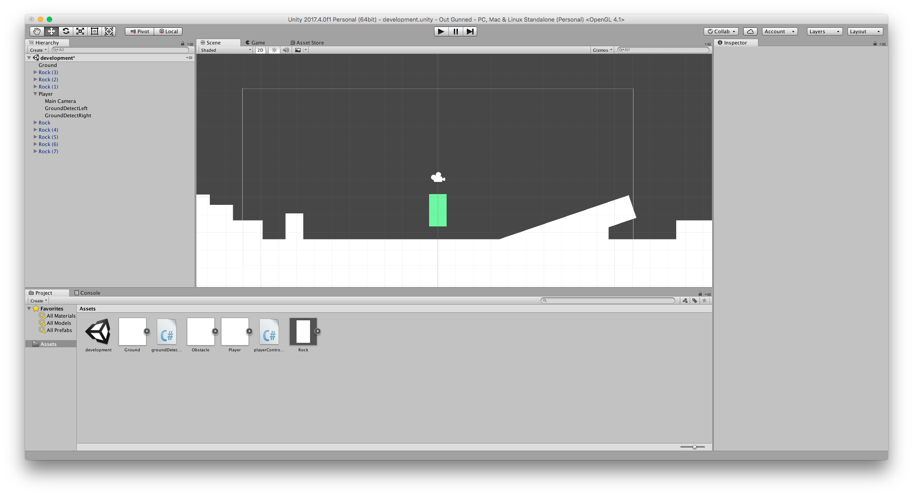
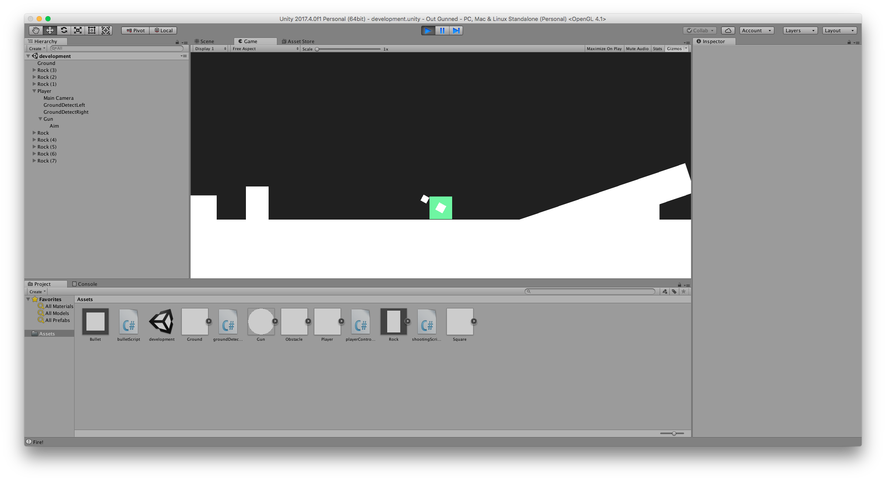
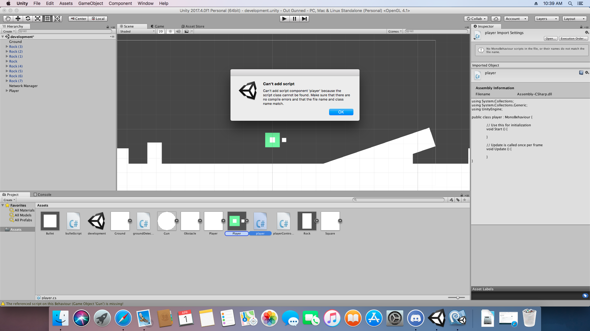
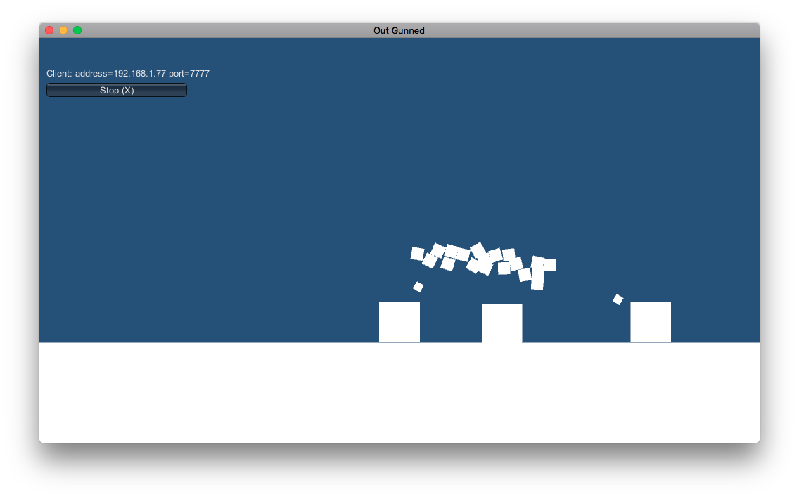
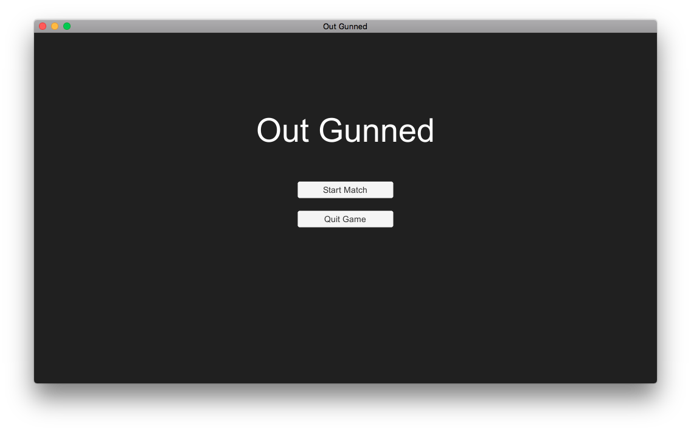
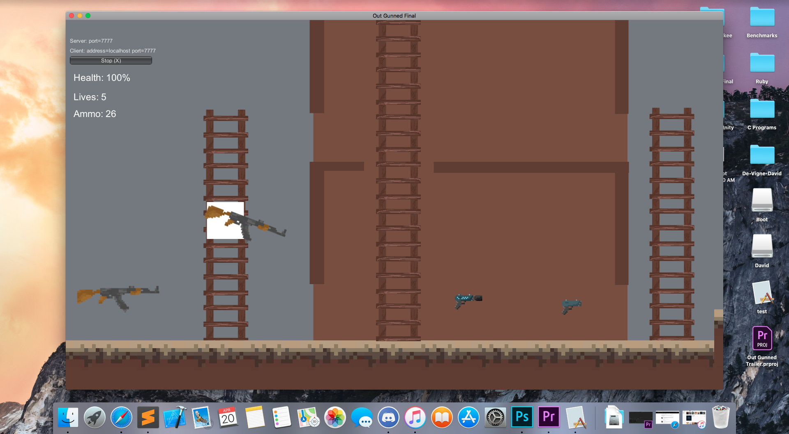
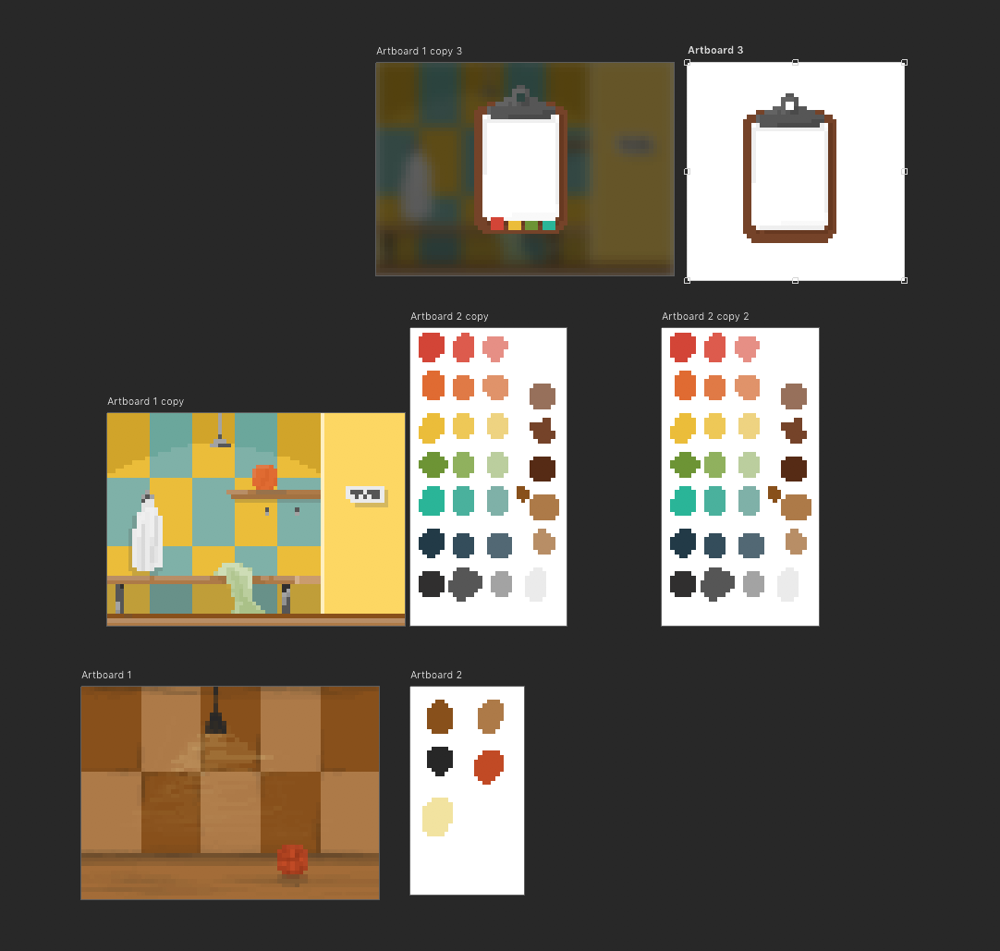

First Thoughts
Just been given the brief, and I’m feeling good about this year! Last year has given me a solid understanding of Unity to work from, so this year I can concentrate on ideation and iteration, rather than learning the very basics of Unity's functionality and syntax.
I think that one of the more challenging aspects of this project will be the ideation step. Coming up with an idea that I feel is solid, takes time, and we only have about two weeks max. However, once I have that idea, I can start working. From there I think it should become a lot easier, as I can easily spend hours on a project I care about, and love every second of it.
07/03/2018
Dead Ideas
Lots of ideas have past, none that I’m particularly enthused about. I do know however that I will be continuing to pursue 2D game development. I think that with the given timeframe, and the amount of work I need to achieve for most of my ideas, 2D will be the best option, as I can eliminate the need for 3D modelling and texturing, as well as a lot of rigging. So as of now, there have been no ideas set in stone.
09/03/2018
Just in Time
I've been brainstorming ideas for good few days now, most idea are now gone and dead, but there was one in particular that I am keen to pursue!
Trigger Finger is a 2D Competitive Action game that pits two players head to head, in quick best of five matches, where both players attempt to down one another. Players are only equipped with a single weapon, a knife, and a few consumables. The weapons have limited ammo, after which players will have to resort to using a knife. Consumables would include stationary shields, grenades and bounce pads. Players will be given a rank based on long term wins and losses.
This game will be multiplayer only. I will have to learn about the technical side of matchmaking systems, apart from that I think that I have enough time to create a decent prototype to show off most of the game features.
11/03/2018
Game Design Document
I've started on the GDD for Trigger Finger, and have approval from the lecturer to go ahead with the idea. I am keen to start working on this project, and will dediciate most of the next three days towards finishing up the GDD to an acceptable standard.
14/03/2018
Almost Finished
Most of the game design document is completed. I think I have a decent amount of detail, and clear explainations of game concepts and gameplay. I will continue to work on the GDD throughout tomorrow because I havn't done as much as I would like to today due to being sick. I will be adding some concept images of in-game items tomorrow as well.
15/03/2018
Handed In GDD
Handed in the GDD this morning, i'm quite happy with how it turned out, I think I added a fair enough of detail and also created some concept art which was also included. I'm keen to start project 2 this weekend and get an early start on prototype development.
16/03/2018
Solid Start
Today i'll be making a solid start on the second project. I never got around to starting earlier this weekend due to other more pressing deadlines as well as illness.
21/03/2018
Core Mechanic Movement
The development of Trigger Finger is officially underway, and so is the idea of a new name. Currently I am working on the core mechanics, specifically the running, jumping and crouching mechanics, as they all need to be solid and robust. I'm also in the process of creating a small test map that will be used to test the different mechanics.
23/03/2018
Mechanics Progress
I’ve implemented basic functionality for the movement, crouch and jump mechanics, allowing the player to traverse the makeshift environment with ease. I will continue to refine these mechanics and iron out any rough patches.
23/03/2018
Gunning it out
Basic versions of the aiming and shooting mechanic are now in place. The player can aim where they want the projectile to be fired by moving the mouse anywhere on the screen. Using the mouse button the player can fire the projectile. I think I have made some solid progress today and will continue working on the mechanics later tonight.
23/03/2018
Multiplayer Progress
I've been working on the multiplayer aspect of the game and was having some luck with it. However I then decided to adapt the shooting mechanics over to multiplayer and broke all of the scripts within the Unity scene. Even new scripts are now non-functional. So I will now be spending some time atempting to fix this issue.
01/04/2018
Multiplayer Working!
Fixed the previous issue and have made a very simple multiplayer test build that allows players to join via IP, control thier own players and shoot independatly.
01/04/2018
Getting There
Still tweaking the shooting and consumables system to worm through a server/client system. I think the movement system is coming along nicely, as issues with latency have been kept under control and the overall feel is still solid. Currently, players are able to conenct to to a hosts computer via IP address. I am happy with the progress the game has made so far, looking forward to figuring out how to implement a consumables system during the weekend, and get it working through multiplayer. I have also implemented a basic main menu system for added functionality.
05/04/2018
Out Gunned!
Trigger Finger has recently been renamed to Out Gunned, I feel as tho the name is now a little more refined. I have just finished up some tweaking and the written statement for development thus far.
06/04/2018
Consumables
The Consumables system is slowly coming along, it took a bit longer then I thought it would to implement. I've also also created a basic matchmaking system that allows player to hit start without having to setup any servers or deal with client connections. The system looks for servers with occupying players and joins if available, if not, the system creates a new lobby and joins automatically.
10/04/2018
Re-wrote Scripts
I've re-written all of the scripts, splitting them up into smaller more manageable sizes. I found this a lot easier to work with and lets me tick off scripts as complete, or in progress, using a status system. This makes knowing what to work on next a lot easier, as well as making implementing new things more efficient because each section is isolated and causes no interference.
I have also created a basic weapon pickup system that allows users to swap weapons, changing the rate of fire and bullet speed when the shoot function is activated.
My next task is working on the environment, implementing objects that players can jump and shoot through, such as building walls, ladders, windows and doors.
11/04/2018
It Broke... But it was a good thing!
Well, yesterday I broke the entire game, I'm still not sure if Unity became corrupt or not, I tried to get it fixed, but rather than fixate myself on a problem that I would not solve. I re-wrote the entire game, and it was the best decision i've made this project. Even tho it was a day before hand-in, I pursued with the re-write.
I have created a version of Out Gunned using a new approch that focused on online optimization and functionality. This version is far superior then the last, allows features to be implimented easily and quickly.
This was a big leasson for to always keep backups of everthing in case of situations like this. I got lucky this time around, as I knew what I had to do, and still had a bit of time to do it. But in the future I may not be as fortunate.
18/04/2018
Out Gunned has a New Face
Just been finilizing some of the features, I have chosen to leave out the abilties, focusing on the weapons first. I know that the hand-in is tomorrow, but I would rather have a nicely polished shooting mechanic than two roughly core implimented mechanics.
18/04/2018
Project Two, Done...
Finished the gameplay trailer and all prepeared for the hand-in. The trailer is not how I would have liked, but due to the circumstances, I think I did well. For me, I think that the most important element is the game. I have worked on the game right up until the last day and happy with the resualt.
19/04/2018
Project Two Review
I think the second project went quite well, there were a few hickups getting multiplayer to work, but overall it was pretty smooth sailing. I will be continuing development on Out Gunned in my own time as I like the general game concept and would like to see a more polished version overall.
04/05/2018
Project Three!
Project three is officially underway, and I'm excited! I'm working on an achievement hunter type game, where the player must discover achievements in order to proceed to the next stage. This is a very different game then what I would find myself usually working on.
At the moment our roles are very up in the air, we haven't really got specific jobs per se. We are all giving our thoughts on the general game direction. Currently I have working on story development, as the game dosen't have on at the moment.
04/05/2018
Art Work
EJ and I have been working on the artwork for the game. I proposed a redesign of the current art style and got a good responce. We are now doing a simple pixel art style that should create more depth and interest, rather than the current flat approach. I've developed some art examples working along side EJ's level design and art input.
04/05/2018